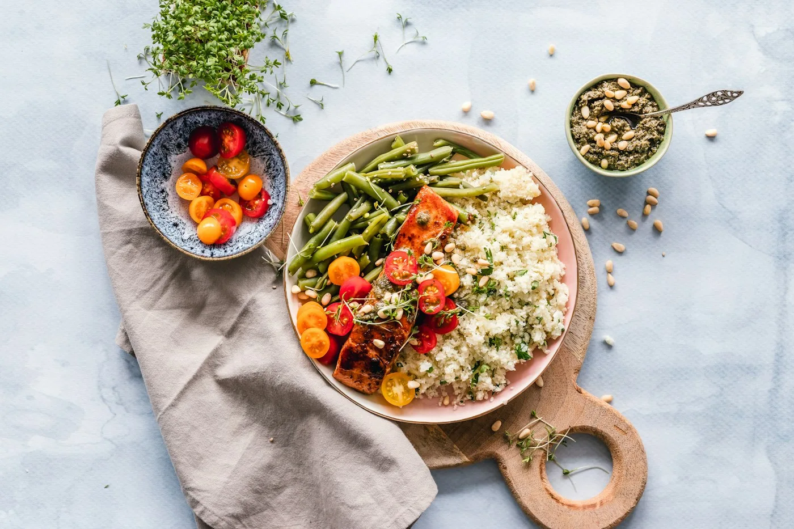

Marmitas da semana: guia para economizar tempo e dinheiro
Aprenda a planejar o cardápio, cozinhar em lote no domingo e montar marmitas saudáveis que duram a semana — com cardápio pronto, lista de compras e prazos de conservação.

Preparar as refeições da semana de uma vez — o famoso meal prep — economiza tempo, reduz gastos com delivery e ajuda a comer melhor. Com 2 a 3 horas no domingo, dá para deixar almoços prontos de segunda a sexta.
1. Planeje o cardápio
Escolha uma estrutura fixa e varie os sabores: 1 carboidrato + 1 proteína + 2 legumes ou verduras. Use nosso planejador de cardápio semanal para montar a semana e gerar a lista de compras automaticamente.
2. Cozinhe em lote
- Bases: uma panela de arroz, uma de feijão e uma de grão (lentilha, grão-de-bico).
- Proteínas: duas opções diferentes, por exemplo frango desfiado temperado e carne moída refogada.
- Legumes: uma assadeira de legumes assados (abóbora, cenoura, brócolis, abobrinha) e uma porção cozida no vapor.
- Molhos: molho de tomate caseiro rende várias combinações.
3. Monte as marmitas
- Espere esfriar por até 1 hora e feche.
- Use potes de vidro com tampa hermética, que vão ao micro-ondas (sem a tampa) e não pegam cheiro.
- Guarde de 3 a 4 marmitas na geladeira e congele o restante.
- Saladas cruas e folhas vão em potes separados e são temperadas na hora.
Quanto tempo dura a marmita
| Onde | Prazo | Dica |
|---|---|---|
| Geladeira (até 5 °C) | 3 a 4 dias | Coma primeiro as que têm peixe ou frutos do mar |
| Freezer (−18 °C) | Até 3 meses | Etiquete com nome e data |
| Bolsa térmica com gelo | Até 4 horas | Leve direto da geladeira |
O que congela bem e o que evitar
Congela bem: arroz, feijão, carnes cozidas e ensopadas, molhos, purês, legumes assados, lasanha, escondidinho e sopas. Evite congelar: batata cozida em pedaços, folhas cruas, ovo cozido e maionese.
Cardápio exemplo para 5 dias
| Dia | Marmita |
|---|---|
| Segunda | Arroz, feijão, frango desfiado com milho e brócolis |
| Terça | Arroz, carne moída com abobrinha e cenoura assada |
| Quarta | Baião de dois com legumes assados |
| Quinta | Macarrão integral ao molho de tomate com frango e espinafre |
| Sexta | Arroz, lentilha, carne moída e abóbora assada |
Como reaquecer
No micro-ondas, aqueça por 2 a 3 minutos, mexa na metade e verifique se está bem quente no centro (acima de 74 °C). Marmita congelada: passe para a geladeira na noite anterior ou use a função descongelar antes de aquecer.
Conteúdo informativo, revisado pela equipe editorial do Clube da Receita. Prazos e temperaturas são referências gerais; siga sempre as orientações do rótulo e, em caso de dúvida sobre segurança dos alimentos, descarte.
← Voltar ao caderno